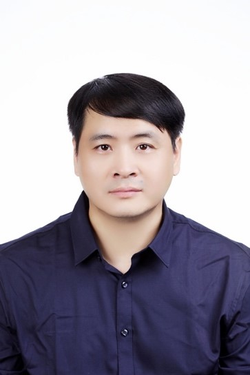

The Fourth IEEE International Conference on Big Data Intelligence and Computing (DataCom 2018)
12-15 August 2018, Athens, Greece


Keynote Speakers
Keynote I: Artificial Intelligence for Cloud Computing Management
Aug 13 (Day 2) 09:10-09:50Prof. Vincenzo Piuri - Università degli Studi di Milano, Italy
http://www.di.unimi.it/piuri
Abstract: Recent years have seen a growing interest among users in the migration of their applications to the Cloud computing environments. However, due to high complexity, Cloud-based services often experience a large number of failures and security breaches, and consequently, impose numerous challenges on the dependability and resilience of users’ applications. Unfortunately, current dependability and resilience solutions focus either on the infrastructure itself or on application analysis, but fail to consider the complex inter-dependencies between system components and application tasks. This aspect is highly crucial especially when Cloud environments are used, as it is increasingly considered nowadays, in critical applications. Besides, definition of application requirements, allocations of resources to application tasks, and optimization of global management parameters usually are based either on statistical approaches or on heuristics strategies typical of operating research. Computational intelligence may give additional opportunities and flexibility in specifying the requirements especially when they are defined by non-experts and in optimizing the resource allocation and the global management parameters. This talk will discuss a user-centric, dependability- and resilience-driven framework that considers deploying and protecting users’ applications in the Cloud infrastructure so as to minimize their exposure to the vulnerabilities in the network, as well as offering fault tolerance and resilience as a service to the users who need to deploy their applications in the Cloud. In this scenario, the talk analyzes the opportunities offered by computational intelligence to specify the characteristics and the requirements of these environments and support their management in the presence of many local optimization minima.
Biography: Professor Vincenzo Piuri has received his Ph.D. in computer engineering at Politecnico di Milano, Italy (1989). He has been Associate Professor at Politecnico di Milano, Italy and Visiting Professor at the University of Texas at Austin and at George Mason University, USA. He is Full Professor in computer engineering at the Università degli Studi di Milano, Italy (since 2000). His main research interests are: intelligent systems, cloud computing, fault tolerance, signal and image processing, machine learning, pattern analysis and recognition, theory and industrial applications of neural networks, biometrics, intelligent measurement systems, industrial applications, digital processing architectures, embedded systems, and arithmetic architectures. Original results have been published in more than 400 papers in international journals, proceedings of international conferences, books, and book chapters. He is Fellow of the IEEE, Distinguished Scientist of ACM, and Senior Member of INNS. He has been IEEE Vice President for Technical Activities (2015), IEEE Director, President of the IEEE Computational Intelligence Society, Vice President for Education of the IEEE Biometrics Council, Vice President for Publications of the IEEE Instrumentation and Measurement Society and the IEEE Systems Council, and Vice President for Membership of the IEEE Computational Intelligence Society. He is Editor-in-Chief of the IEEE Systems Journal (2013-19) and Associate Editor of the IEEE Transactions on Computers and the IEEE Transactions on Cloud Computing, and has been Associate Editor of the IEEE Transactions on Neural Networks and the IEEE Transactions on Instrumentation and Measurement. He received the IEEE Instrumentation and Measurement Society Technical Award (2002) for the contributions to the advancement of theory and practice of computational intelligence in measurement systems and industrial applications. He is Honorary Professor at the Obuda University, Budapest, Hungary (since 2014), Guangdong University of Petrochemical Technology, China (since 2014), the Muroran Institute of Technology, Japan (since 2016), and the Amity University, India (since 2017).
Keynote II: Cyber-Physical-Social Systems: Design Automation and Data Analytics
Aug 13 (Day 2) 09:50-10:30Prof. Laurence T. Yang - St Francis Xavier University, Canada
http://cs.stfx.ca/~ltyang/
Abstract: The Cyber-Physical-Social Systems (CPSS) are the integration of computation, communication and control with the physical world, human knowledge and sociocultural elements. It is a novel emerging computing paradigm and has attracted wide concerns from both industry and academia in recent years. Currently, CPSS are still in their infancy stage. Our first ongoing research is to study effective and efficient approaches for CPSS modeling and general system design automation methods, as well as methods analyzing and/or improving their power and energy, security, trust and reliability features. Once the CPSS have been designed, they collect massive data (Volume) from the physical world by various physical perception devices (Variety) in structured/semi-structured/unstructured format and respond the users’ requirements immediately (Velocity) and provide the proactive services (Veracity) for them in physical space or social space. These collected big data are normally high dimensional, redundant and noisy, and many beyond the processing capacity of the computer systems. Our second ongoing research is focused on the Data-as-a-Service framework, which includes data representation, dimensionality reduction, incremental and distributed processing (securely on cloud), deep learning, clustering, prediction and proactive services, aiming at representing and processing big data generated from CPSS, providing more valued smart services for human and refining the previously designed CPSS. This talk will present corresponding case studies in some applications to demonstrate the feasibility and flexibility of the proposed system design methodology and analytic framework.
Biography: Laurence T. Yang got his BE in Computer Science and Technology and BSc in Applied Physics both from Tsinghua University, China and Ph.D in Computer Science from University of Victoria, Canada. He is a professor at St. Francis Xavier University, Canada. His research includes parallel and distributed computing, embedded and ubiquitous/pervasive computing, and big data. He has published around 360 international journal papers in the above areas, of which half on top IEEE/ACM Transactions and Journals, others mainly on Elsevier, Springer and Wiley Journals. He has been involved actively as a steering chair for 10+ IEEE international conferences. He served as the vice-chair of IEEE CS Technical Committee of Supercomputing Applications (2001-2004), the chair of IEEE CS Technical Committee of Scalable Computing (2008-2011). He was the vice-chair (2014) and the chair (2015) of IEEE Canada Atlantic Section. Now he is the chair of IEEE CS Technical Committee of Scalable Computing (2018-), the co-chair of IEEE SMC Technical Committee on Cybermatics (2016-) and the vice-chair of IEEE CIS Technical Committee on Smart World (2016-). In addition, now he is serving as an editor for many international journals (such as IEEE Systems Journal, IEEE Access, Information Sciences (Elsevier), Information Fusion (Elsevier), Big Data Research (Elsevier), etc). He has been acting as an author/co-author or an editor/co-editor of 25 books from well-known publishers. He has been invited to give around 35 keynote talks at various international conferences and symposia.His recent honours and awards include IEEE TCCPS Distinguished Leadership Award on Cyber-Physical Systems (2018), IEEE SCSTC Life-Career Achievement Award on Smart Computing (2018), Fellow of Canadian Academy of Engineering (2017), IEEE System Journal Best Paper Award (2017), IEEE TCSC Award for Excellence in Scalable Computing (2017), and the PROSE Award on Engineering and Technology (2010).
Keynote III: Extreme Data Management, Analysis, and Visualization for Scientific Discovery and Economic Development
Aug 14 (Day 3) 08:40-09:20Prof. Valerio Pascucci - University of Utah, USA
http://cedmav.com
Abstract: Effective use of data management techniques for the analysis and visualization of massive data models is crucial for the success of any supercomputing center, for creating a data-intensive scientific investigation cyberinfrastructure, and for a growing number of industrial endeavors. As exascale computing progresses, data movement challenges have fostered innovation leading to complex streaming workflows which take advantage of being able to process in-motion data. This technology is also being used to more broadly investigate sensing data and is being deployed in commercial products, with direct economic and societal impact.The techniques developed at the Center for Extreme Data Management Analysis and Visualization (CEDMAV) allow for the building of a scalable data movement infrastructure for fast I/O while organizing the data in a way that makes it immediately accessible for analytics and visualization. In this talk I will share not only these techniques, but also a topological analytics framework that allows for processing data in-situ and for achieving massive data reductions while maintaining the ability to explore the full parameter space for a featured selection. Overall, this technological innovation leads to a flexible data streaming workflow that allows for working with massive simulation models without compromising the interactive nature of the exploratory process that is characteristic of the most effective data analytics and visualization environment. These data streaming technologies are increasingly useful in experimental facilities, e.g., microscopes used in neuroscientific research, and synchrotron light sources for materials science. The distributed deployment of these technologies is poised to provide cost effective solutions in fields such as precision agriculture, surveillance, telemedicine, and many others as well.
Biography: Dr. Valerio Pascucci is the John R. Parks Inaugural Endowed Chair of the University of Utah and the Founding Director of the Center for Extreme Data Management Analysis and Visualization (CEDMAV). Valerio is also a Faculty of the Scientific Computing and Imaging Institute, a Professor of the School of Computing, University of Utah, and the CEO of ViSUS LLC (visus.net with open source distributions at visus.org). Valerio was named Laboratory Fellow at PNNL and was recently a visiting professor in KAUST University. Before joining the University of Utah, Valerio was the Data Analysis Group Leader of the Center for Applied Scientific Computing at Lawrence Livermore National Laboratory, and an Adjunct Professor of Computer Science at the University of California Davis. Valerio's research interests include Big Data management and analytics, progressive multi-resolution techniques in scientific visualization, High Performance Computing, discrete topology, geometric compression, computer graphics, computational geometry, geometric programming, and solid modeling. Valerio’s interests in fundamental research are also complemented by entrepreneurial activities that facilitate the societal impact of new technology the commercialization of innovative products. Valerio is the coauthor of more than two hundred refereed journal and conference papers and book chapters and is an Associate Editor of the IEEE Transactions on Visualization and Computer Graphics.
Keynote IV: Integrating Internet of Things Platforms: A Methodological Perspective
Aug 14 (Day 3) 09:20-10:00Prof. Giancarlo Fortino - University of Calabria, Italy
https://www.researchgate.net/profile/Giancarlo_Fortino
Abstract: The integration of existing and future smart cyberphysical systems within a fully realized Internet of Things (IoT) cannot dismiss the requirement of interoperability. The absence of standards for the IoT along with its intrinsic complexity demand for proper methodologies in order to fully support the development of heterogeneous, but interoperable, IoT systems as well as their integration. However, at the state-of-the-art, no methodologies for IoT systems integration are available. To fill this gap, in this keynote, the INTER-METH engineering methodology is presented. Developed in the context of the European H2020 project named INTER-IoT (http://www.inter-iot-project.eu/), INTER-METH supports the integration process of heterogeneous IoT platforms from the analysis to the maintenance phase. Its main features as well as its abstract and instantiated process schema are described; in particular, in this talk the focus will be on the analysis and design phase that are fundamental for driving the integration process. Moreover, we also describe a purposely developed tool supporting the application of INTER-METH, named INTER-CASE. Specifically, the application of INTER-CASE in the domain of INTER-HEALTH, a main use case of INTER-IoT, will be discussed.
Biography: Professor Giancarlo Fortino is currently a Professor of Computer Engineering (since 2006) at the Dept. of Informatics, Modeling, Electronics and Systems (DIMES) of the University of Calabria (Unical), Rende (CS), Italy. He has a Ph. D. degree and Laurea (MSc+BSc) degree in Computer Engineering from Unical. He holds the Italian Scientific National Habilitation for Full Professorship and is High-end Foreign Expert of China, Adjunct Professor at the Wuhan University of Technology (China), Senior Research Fellow at the Italian National Research Council - ICAR Institute, and High-end Expert at HUST Univ. (China). He has been also Visiting Researcher and Professor at the International Computer Science Institute (Berkeley, USA) and at the Queensland University of Technology (Australia), respectively. His main research interests include agent-based computing, body area networks, wireless sensor networks, pervasive and cloud computing, multimedia networks and Internet of Things technology. He participated to many local, national and international research projects and currently is the vice coordinator and STPM of the EU-funded H2020 INTER-IoT project He authored over 350 publications in journals, conferences and books. He chaired 85+ Int'l conferences/workshops as co-chair, organized 35+ special issues in well-known ISI-impacted Int'l Journals, and participated in the TPC of 400+ conferences. He is in the list of Top Italian Scientists (TIS) by VIA-academy (http://www.topitalianscientists.org/), with h-index=35 and 4300+ citations according to GS. He is the founding editor of the Springer Book Series on "Internet of Things: Technology, Communications and Computing”, and currently serves (as associate editor) in the editorial board of IEEE Transactions on Affective Computing, IEEE Transactions on Human-Machine Systems, IEEE Sensors Journal, IEEE Access, Journal of Networks and Computer Applications, Engineering Applications of Artificial Intelligence, Information Fusion. He is the recipient of the 2014 Andrew P. Sage SMC Transactions Paper award. He is co-founder and CEO of SenSysCal S.r.l., a spin-off of Unical, developing innovative IoT-based systems for e-health and domotics. He is IEEE Senior member, member of the IEEE SMCS Board of Governors, the Chair of the IEEE SMC Italian Chapter, and founding chair of the IEEE SMC Technical Committee on “Interactive and Wearable Computing and Devices”.
Keynote V: Cleanroom Computing: Building a Strong Mutual Trust among Service Providers and Users
Aug 15 (Day 4) 09:00-09:40Prof. Guojun Wang - Guangzhou University, China
http://trust.gzhu.edu.cn/faculty/~csgjwang/
Abstract: New-generation operating systems for network computing are facing challenges for providing efficient and secure services. Unfortunately, many users still hesitate to embrace this brand-new network computing services due to their lack of trust in such kind of services. For building a strong mutual trust among service providers and users, we propose to require service providers and users to sign bilateral cleanroom security agreements to ensure that only such software associated with such agreements are executable on service providers and/or user clients. We present a cleanroom computing and cleanroom security approach to monitor software streams flowing from software repositories to servers and/or clients, and to keep those cleanroom security agreements tamper-proof. We also present a runtime cleanroom framework for securing software execution based on hardware-assisted integrity verification and cryptographic techniques. Research results provide significant theoretical and practical supports in building efficient and secure new-generation operating systems for network computing.
Biography: Guojun Wang received B.Sc. degree in Geophysics, M.Sc. degree in Computer Science, and Ph.D. degree in Computer Science, at Central South University, China, in 1992, 1996, 2002, respectively. He is a Pearl River Scholarship Distinguished Professor of Higher Education in Guangdong Province, a Doctoral Supervisor of School of Computer Science and Technology, Guangzhou University, China. He has been listed in "Chinese Most Cited Researchers" (Computer Science) by Elsevier in the past four consecutive years (2014-2017). He had been a Professor at Central South University, China; an Adjunct Professor at Temple University, USA; a Visiting Scholar at Florida Atlantic University, USA; a Visiting Researcher at the University of Aizu, Japan; and a Research Fellow at the Hong Kong Polytechnic University, HK. His research interests include artificial intelligence, big data, cloud computing, mobile computing, trustworthy/dependable computing, cyberspace security, recommendation systems, and mobile healthcare systems. He has published more than 300 technical papers and books/chapters in the above areas. His research is supported by Key Project of the National Natural Science Foundation of China, the National High-Tech Research and Development Plan of China (863 Plan), and the Ministry of Education Fund for Doctoral Disciplines in Higher Education. He has served as an associate editor or on editorial board of some international journals including IEEE Transactions on Parallel and Distributed Systems (TPDS), Security and Communication Networks (SCN), and International Journal of Parallel, Emergent and Distributed Systems (IJPEDS). He is the Leading Steering Chair of the IEEE International Conference on Trust, Security and Privacy in Computing and Communications (TrustCom), and the Leading Steering Chair of the International Conference on Security, Privacy and Anonymity in Computation, Communication and Storage (SpaCCS). He is a member of IEEE (2010-), a member of ACM (2011-), a member of IEICE (2011-), and a distinguished member of CCF (2013-).